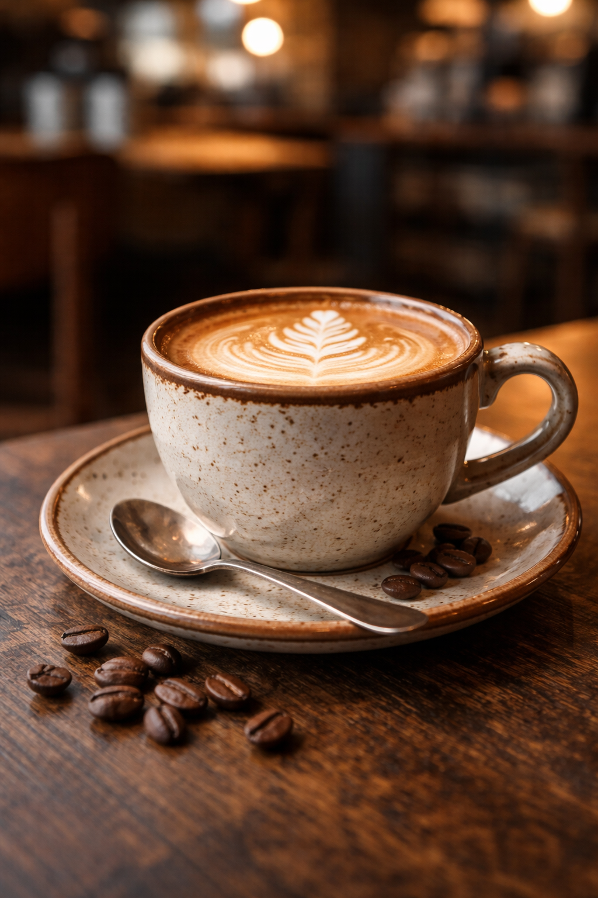

Onde cada xícara
conta uma história...
Grãos selecionados de origem única,
tostados artesanalmente e preparados com cuidado para você.
Uma pausa que aquece a alma.

Nossa História
Nascemos de uma paixão familiar pelo café de qualidade. Nossa jornada começa na escolha cuidadosa dos grãos — direto de pequenos produtores do Cerrado mineiro e da Serra Gaúcha — e termina na sua xícara, sempre fresca e cheia de personalidade. Acreditamos que um bom café merece um ambiente que faça jus a ele: acolhedor, sem pressa e com alma.